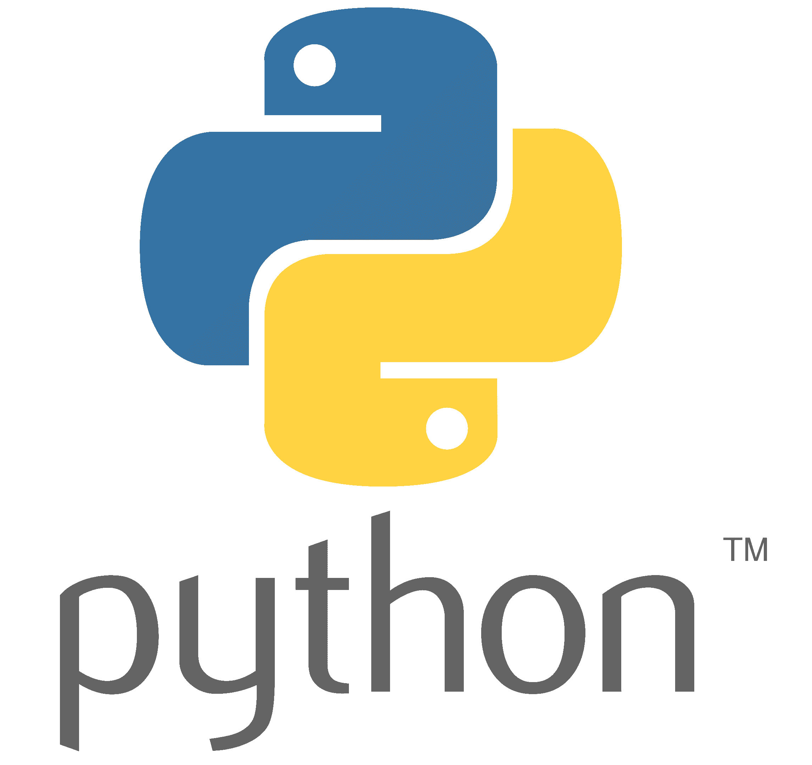
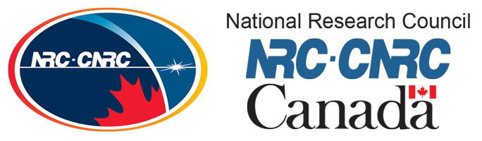

JOB DESCRIPTION
Working as an Undergraduate Reasearch Assisstant this summer provided me with a really unique co-op experience. It was my first time working in a position in which there wasn’t a clearly defined job description. I found this daunting at first, but soon learned to love it as it gave me the opportunity to have an imperative role in the project throughout my work term, as well as the freedom to work on aspects of the project I found most interesting.



At the beginning of the work term, Spencer defined clear goals for the project. By the end of the summer we wanted to be able to effectively create test data, plan and implement at least one novel path planning technique using neural network-based methodologies, and develop, test, and tune a controller that allows a robot to follow generated paths. Throughout the work term I mainly used Python. I worked with PyTorch to implement and fine-tune long short-term memory and convolutional neural networks, created algorithms related to map generation, path planning, and path data interpretation, helped develop controller code, and got exposure to working with ROS.
We successfully completed our goals by the end of the work term, as both map and path test data can now be created efficiently, a first draft of both WGAN and LSTM neural networks that can consistently create path data were implemented, and during the semester we were able to go to the National Research Centre in London, Ontario to test and successfully run path data on a robot using a PD controller.
